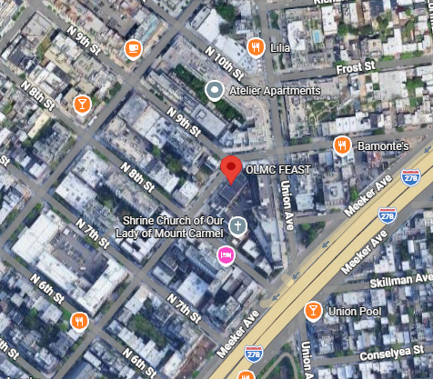

Sobre la organización
F.E.A.S.T. es una organización sin fines de lucro dedicada a brindar refugio, alimentación y capacitación laboral a personas en situación de vulnerabilidad en la ciudad de Nueva York. Es un pilar fundamental para la comunidad de Queens y Manhattan.
Detalles del Puesto
Cargo: Asistente Logístico y Voluntario
Fecha de ingreso: Mayo 2018
Fecha de fin: Octubre 2024
Tareas realizadas:
- Gestión y clasificación de inventario de donaciones entrantes.
- Coordinación de la línea de distribución de alimentos para más de 100 personas diariamente.
- Asistencia técnica básica en el centro de capacitación para adultos.
Ubicación
